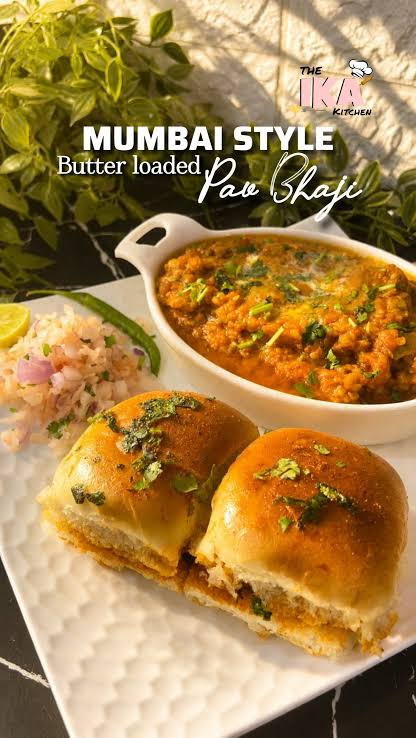

PAV BHAJI is one of India's most iconic and beloved street foods, originating from the bustling streets of MUMBAI. It consists of a thick, vibrant, mashed vegetable curry (bhaji) cooked on a flat griddle with a signature blend of spices, laden with an incredibly generous amount of butter, and crowned with a layer of grated cheese. This spicy, tangy curry is served piping hot alongside pillowy soft dinner rolls (pav) that are shallow-fried to perfection in even more butter.
Pav Bhaji is much more than just a popular street snack-it is a fast-paced culinary phenomenon deeply woven into the daily hustle of Maharashtra. While it is celebrated globally for its rich, spicy, and buttery profile, the dish holds a fascinating history, a precise science of preparation, and a massive subculture of street-style variations.